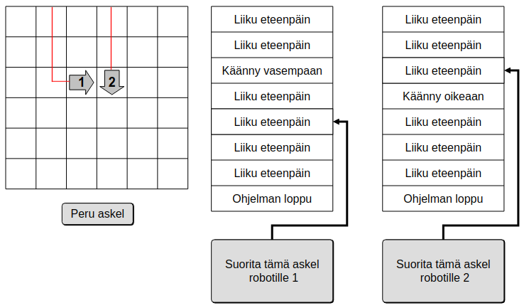
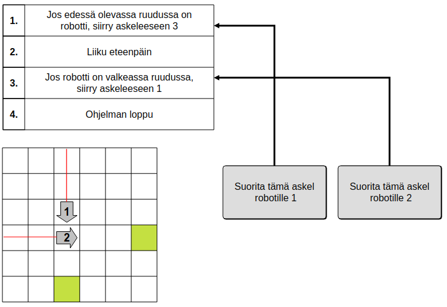
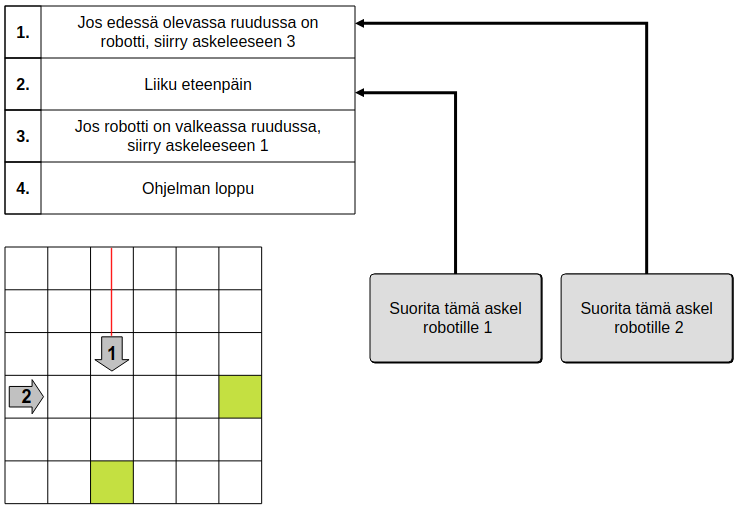
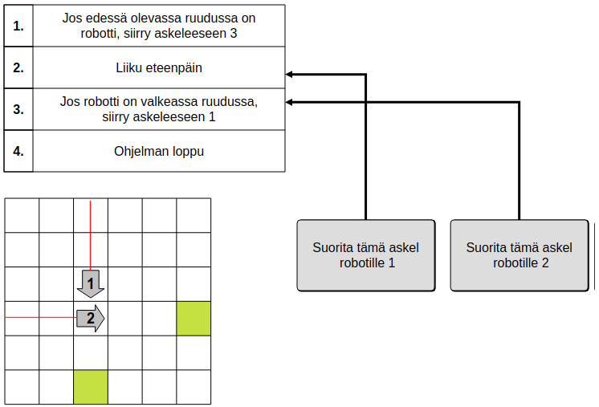
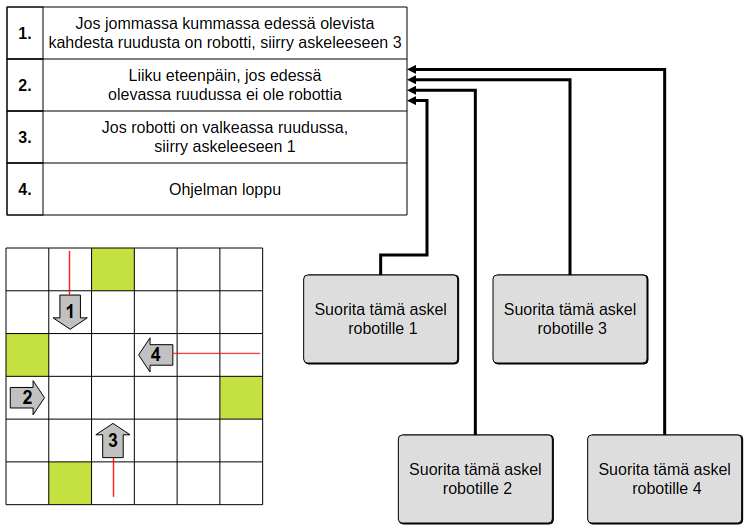

Ratkaisu
Robotit 1 ja 2 voivat törmätä vain niiden reittien risteyksessä.

Voimme esimerkiksi ensin liikuttaa robotin 2 risteykseen ja jättää sen siihen. Kun tämän jälkeen liikutamme myös robotin 1 risteykseen asti, se törmää robottiin 2.

Edellä kuvattu ratkaisu vastaa robottien ohjausnappien klikkaamista järjestyksessä: 2, 2, 1, 1, 1, 1, 1.
Jos liikutamme ensin robotin 2 robottien reittien risteykseen ja alamme vasta sen jälkeen liikuttaa robottia 1 eteenpäin, jää robotti 1 jumiin törmäämättä robottiin 2: kun robotti 1 saapuisi robotin 2 viereen, siirtyisi ohjelman 1. askel 3. askeleeseen, joka taas siirtyisi 1. askeleeseen, joka taas siirtyisi 3. askeleeseen, ja niin edelleen.

Meidän täytyy siis saada aikaan tilanne, jossa robotti 1 on valmis suorittamaan eteenpäin liikkuvan 2. askeleen, vaikka sen edessä olisikin robotti 2. Tämä voidaan tehdä esimerkiksi liikuttamalla ensin robotti 1 risteystä edeltävään ruutuun ja suorittamalla edessä olevaa ruutua tutkiva 1. askel jo valmiiksi: nyt robotti 1 on valmis liikkumaan eteenpäin tutkimatta enää edessään olevaa ruutua.

Liikutetaan tämän jälkeen robotti 2 risteykseen ja liikutetaan sen jälkeen robottia 1: nyt robotti 1 törmää robottiin 2.

Edellä kuvattu ratkaisu vastaa robottien ohjausnappien klikkaamista järjestyksessä: 1, 1, 1, 1, 1, 1, 1, 2, 2, 2, 2, 2, 1.
Jotta robotit saataisiin jumiin, pitää ne ensin siirtää asemiin, jossa ne ovat yhden askeleen päässä lopullisesta jumiutumiseen johtavasta ruudusta ja niiden ohjelmissa on seuraavaksi vuorossa eteenpäin liikkuva 2. askel.
Robotit voidan suoraviivaisesti liikuttaa yksitellen seuraavaan tilanteeseen asti:

Tämän jälkeen tarvitsee enää suorittaa 2. askel kullekin robotille, jolloin tuloksena on kaikkien robottien jumittuminen:

Edellä kuvattu ratkaisu vastaa robottien ohjausnappien klikkaamista järjestyksessä: 1, 1, 1, 1, 2, 3, 3, 3, 3, 4, 4, 4, 4, 4, 4, 4, 1, 2, 3, 4.
Tämä on tietojenkäsittelyä!
Tehtävä sivuaa mm. seuraavia tietojenkäsittelyn alueita:
- Samanaikainen laskenta: usean ohjelman (tai saman ohjelman kopioiden) suorittamista samanaikaisesti toistensa rinnalla.
- Autonomiset toimijat: usean itsenäisesti toimivan ohjelman tai laitteen yhteistyö.
Kummallekin edellämainituista alueista on yhteistä se, että täytyy hallita useita rinnakkain suoritettavia/toimivia ohjelmia/toimijoita. Tämä voi olla todella haastavaa saada toimimaan oikein. Esimerkiksi tämän tehtävän kolmen tähden versiossa oli tilanne, jossa ohjelman 1. askel pyrki estämään robotin törmäämisen toiseen robottiin, mutta siitä huolimatta robotit oli mahdollista saada törmäämään toisiinsa. Tehtävä toki on yksinkertaistus oikeasta elämästä, mutta esimerkiksi autonomisten autojen (robottiautojen) kehittäjille on suuri haaste saada toteutettua autoa ohjaava järjestelmä niin, että sen toimintalogiikka kykenisi luotettavasti välttämään tarpeettomia kolareita erilaisissa toimintaympäristöissä ja mahdollisissa poikkeustilanteissa.
Katso lisää esim. https://en.wikipedia.org/wiki/Concurrent_computing (englanniksi) ja https://en.wikipedia.org/wiki/Autonomous_agent (englanniksi).